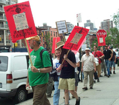
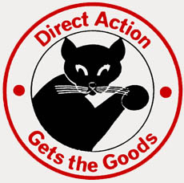

Submitted on Fri, 07/31/2009 - 2:17pm
Disclaimer - The opinions of the author do not necessarily match those of the IWW. The image pictured to the right did not appear in the original article, we have added it here to provide a visual perspective. This article is reposted in accordance to Fair Use guidelines.
Originally posted at CBC News, Tuesday, July 14, 2009
Employees at a Starbucks franchise in Quebec City filed a request to unionize with Quebec's labour relations board on Monday.
If successful, they would become the first workers employed by the coffee chain to unionize in the province.
Employee Simon Gosselin said the move was sparked when Starbucks
made "unfair" changes to working conditions. He said the staff,
comprised of mostly student workers, was being forced to work at least
24 hours a week or be fired.
“I was working between 12 and 16 hours, most of the employees were
doing it as well, and none of us will be able to do that anymore,” said
Gosselin.
The workers have aligned themselves with the Industrial Workers of
the World, a large international union that has butted heads with
Starbucks in the past.
Submitted on Fri, 07/31/2009 - 1:45pm

Quebec City Starbucks Baristas Steamed over New Scheduling Demands
Quebec
City, Canada – Steamed over unreasonable new scheduling demands and
deteriorating working conditions, baristas at the Germain-de-Prés
Avenue Starbucks filed for union accreditation Monday, becoming the
first store in Canada to affiliate with the Starbucks Workers Union, a
campaign of the Industrial Workers of the World labor union. The Labor
Relations Commission of Quebec will grant the union accreditation after
verifying their authorization cards in the next few days.
Policy
changes related to Starbucks’ new “Optimal Scheduling” program, one of
a slew of recent schemes intended to slash labor costs, provided the
main impetus for unionization. Under the new policy, Starbucks requires
nearly around-the-clock availability from workers, while refusing to
guarantee a single work hour each week.
Submitted on Thu, 07/30/2009 - 11:55am

Workers at Streetlight / Porchlight Youth Shelters are asking for support from Fellow Workers in the IWW in an escalation campaign against Janus Youth Programs. The workers have been in wage re-negotiations with Janus since January but the negotiations have been shaky since the beginning.
Janus has repeatedly insisted that they don’t have to bargain and have refused to put forward any counter-proposals that would allow for the modest demands that the Union is seeking. Janus has denied the overwhelming majority of Information Requests throughout the course of negotiations as well, further hampering the negotiations. Attempts to reach out to the National Labor Relations Board have been fruitless as well despite evidence of “bad faith bargaining” on behalf of Janus.
The Union has dropped several of the original demands including a Spanish speaking pay differential in order to focus on a Cost Of Living Adjustment (if Janus provides it for other non-union Janus employees) and a raise for the On-Call (Sub) positions when they reach Bargaining Unit status. Janus’ last communication to the Union was that they were done with negotiations and that workers should wait until next year when the full contract expires to re-negotiate.
The first step in escalation was to have Portland IWW members and other local allies put pressure on Janus through a phone and email blast. The next step is to ask FW’s from across the world to do the same.
Below is a rough draft script for when making phone calls or sending emails. Phone calls are most effective but emails help as well. We are trying to hit them Monday (August 3rd) through Wednesday (August 5). Please take some time and make a couple calls during those days to help out workers at Streetlight / Porchlight Youth Shelters. If you have any questions or would like to get more involved please contact Chris at chrisagenda@gmail.com.
Submitted on Tue, 07/28/2009 - 3:53pm
The following Motion was passed unanimously by the members of the International Solidarity Committee of the Industrial Workers of the World on July 25, 2009.
---
Portions of this Motion are addressed to the SweatFree Communities and the AFL-CIO Union Label Committee. Both are convening in September.
---
 Where as… there is a viable global apparel union organizing drive spearheaded by workers in the Export Processing Zones and Free Trade Zones producing apparel for the North American consumer market. Policies that leverage the high expectations for workers rights in North American communities and the solidarity of workers in North America through licensing and procurement are a necessary component of this organizing drive.
Where as… there is a viable global apparel union organizing drive spearheaded by workers in the Export Processing Zones and Free Trade Zones producing apparel for the North American consumer market. Policies that leverage the high expectations for workers rights in North American communities and the solidarity of workers in North America through licensing and procurement are a necessary component of this organizing drive.
Be it resolved… that the ISC of the IWW commend SweatFree Communities on its annual conference to be held in Detroit MI on September 11- 13, 2009 and recognizes that SFC Executive Director Bjorn Claeson has worked persistently to maintain openness and substantive dialogue within the community of North America activists supporting global apparel union organizing.
Where as… SFC has acknowledged and supported the Pittsburgh Anti Sweatshop Community Alliance’s strategy of Community Collective Bargaining with the Home Team as the only way to leverage the anti sweatshop sentiment of communities working to hold their sports teams accountable for the working conditions in which team apparel is sewn.
Be it resolved that the ISC of the IWW continues to its support of Community Collective Bargaining with the Home Team and urges our colleagues in the North America anti sweatshop movement to reject direct negotiations with any of the major leagues.
Submitted on Wed, 07/22/2009 - 12:23am
Disclaimer: This is not an IWW action; it is being posted in solidarity.
Workers staging a sit-in at the soon-to-close Vestas wind turbine plant on the Isle of Wight are being starved out by police.
The police, many inside the factory and dressed in riot gear, have denied food to the workers who took over the factory offices last night, to protest about the closure of their factory. The police, operating with highly questionable legal authority, have surrounded the offices, preventing supporters from joining the sit-in, and preventing food from being brought to the protestors.
Around 20 workers at the Vestas Plant in Newport, on the Isle of Wight, occupied the top floor of offices in their factory to protest against its closure which will result in over 500 job losses.